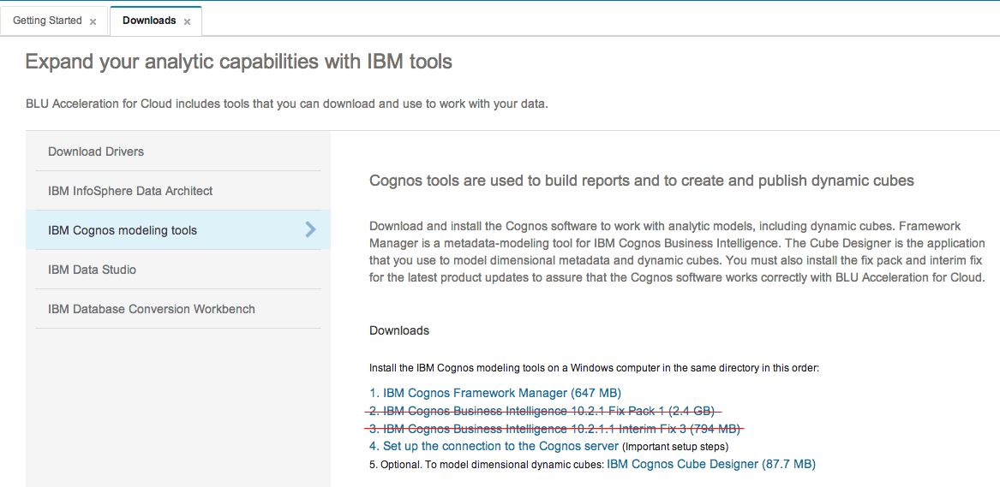
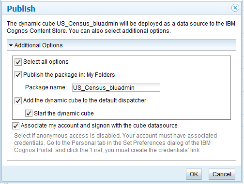
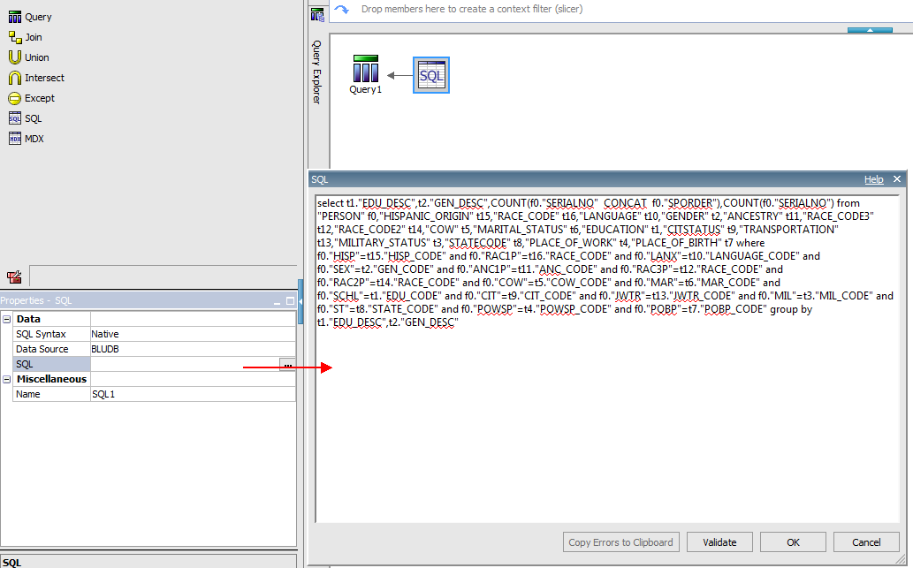
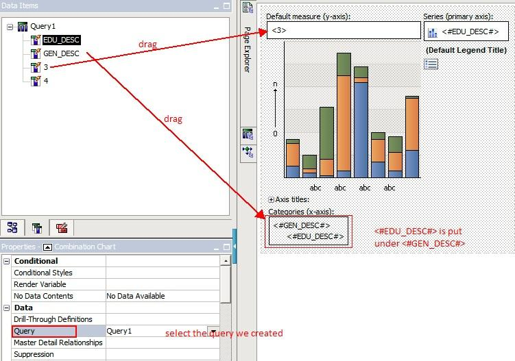

Adele, the business analyst at ACME Corporation, wants to create reports using BLU Acceleration and Cognos Business Insight on her sales data. She first would like to get acquainted with the sample reports provided with BLU Acceleration for cloud and then use this scenario to create a report.
Adele needs admin access to be able to perform publishing of Cube. Please ask me so that I can assign you admin privilege. You also need to download and install the following Cognos client software on your laptop. Follow page. Please ignore installing fixpack and interim fixpack outlined in 2 and 3. Please install Cube designer for this scenario. See below: 
Designing the Cube
You should have configured your “IBM Cognos Configuration” to point to the Cognos server by following step 4 in above section.
You can rename your package as you like.
Generating Charts

select t1."EDU_DESC",t2."GEN_DESC",COUNT(f0."SERIALNO" CONCAT f0."SPORDER"), COUNT(f0."SERIALNO") from "PERSON" f0,"HISPANIC_ORIGIN" t15,"RACE_CODE" t16, "LANGUAGE" t10,"GENDER" t2,"ANCESTRY" t11,"RACE_CODE3" t12,"RACE_CODE2" t14, "COW" t5,"MARITAL_STATUS" t6,"EDUCATION" t1,"CITSTATUS" t9,"TRANSPORTATION" t13, "MILITARY_STATUS" t3,"STATECODE" t8,"PLACE_OF_WORK" t4,"PLACE_OF_BIRTH" t7 where f0."HISP"=t15."HISP_CODE" and f0."RAC1P"=t16."RACE_CODE" and f0."LANX"=t10."LANGUAGE_CODE" and f0."SEX"=t2."GEN_CODE" and f0."ANC1P"=t11."ANC_CODE" and f0."RAC3P"=t12."RACE_CODE" and f0."RAC2P"=t14."RACE_CODE" and f0."COW"=t5."COW_CODE" and f0."MAR"=t6."MAR_CODE" and f0."SCHL"=t1."EDU_CODE" and f0."CIT"=t9."CIT_CODE" and f0."JWTR"=t13."JWTR_CODE" and f0."MIL"=t3."MIL_CODE" and f0."ST"=t8."STATE_CODE" and f0."POWSP"=t4."POWSP_CODE" and f0."POBP"=t7."POBP_CODE" group by t1."EDU_DESC",t2."GEN_DESC"
Please note, for this chart to display Education Level by Gender, we put <#EDU_DESC#> under <#GEN_DESC#> for x-axis, so that Education Level will be treated as a sub-category for Gender Information.
